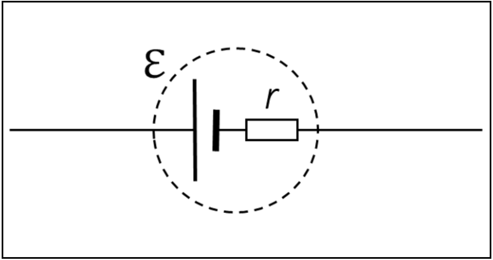

Lecture 5: Internal Resistance#
Learning Objectives#
By the end of this lecture you should:
Know both methods for calculating the internal resistance of a battery.
Be able to explain why one method is preferred over the other.
Internal Resistance#
So far when we have been considering sources of EMF like batteries in this unit, we have assumed that they are ideal batteries meaning that they have no internal resistance. In reality, most batteries will have a small amount of internal resistance i.e some resistance between their positive and negative terminals.
In many circumstances this internal resistance is negligiable, however if the internal resistance is similar to a considerable fraction of the circuit resistance, it can modify the behaviour of the circuit. It is therefore important that we are able to determine the magnitude of the internal resistance.
Formally, internal resistance is defined as “Internal resistance is the loss of potential difference per unit current in a source when current passes through a source.”.
To determine this internal resistance, we will need to consider the battery as a source of EMF connected in series with a small resistor, r, as shown in the diagram below.

Normally when we want to determine the resistance of a component we would connect an ameter in series with it to measure how much current is flowing through it and a voltmeter in parallel with it to measure the voltage drop across it. We would then be able to use Ohm’s law to determine the resistance.
Unfortunately, it is not possible to connect an ameter or voltmeter to the “internal resistor” inside a voltage supply. We must therefore determine it using one of two methods.
Method 1#
The first method involves using an ideal voltmeter and an ideal ameter.
An ideal voltmeter has an infinite amount of resistance meaning that no current can flow through it. This means that when it is connected across a component in parallel, all of the current flows through that component and it perfectly measures the voltage drop across it.
If we connect an ideal voltmeter to the terminals of the battery when it is connected to no other components (this is known as an unloaded circuit), we will directly measure the voltage across the terminals of the battery. This is because there is no current flowing meaning that there is no voltage drop across the “internal resistor” (\(V_r = 0\)). This voltage is known as the open circuit voltage, \(V_{OC}\).
An ideal ameter has zero resistance meaning that when placed in series into a circuit, there is no voltage drop across it as the charges flowing through it lose no energy as they do so.
If we then connect an ideal ameter to the terminals of the battery as an unloaded circuit, the voltage drop across the “internal resistor” must be equal to the open circuit voltage. This is because we know that the total voltage drop across components in a circuit must be equal to the emf supplied and there are no other components with resistance in this circuit. The current we measure using the ameter in this configuration is known as the short circuit current, \(I_{SC}\).
As we now know the current flowing through the internal resistor and the voltage drop across is, we can determine the internal resistance using Ohm’s law:
\( V_{OC} = I_{SC} r \)
\( \therefore r = \frac{V_{OC}}{I_{SC}}.\)
Warning
A short circuit is created when the current finds a path of lower resistance to travel along.
Essentially, by creating a circuit with no resistance as above, we have created a short circuit. This is very dangerous and the reason why this method is not used for determining internal resistance.
For example, consider a \(12\,V\) battery with an internal resistance of \(1\, \Omega\). The power disipated by this circuit is:
\( P = \frac{V^2}{R} \)
\( P = \frac{(12\,V)^2}{1\,\Omega} \)
\( P = 144\, W \)
This is an unsafe amount of power which is why we should not create short circuits!
Method 2#
If we cannot measure the internal resistance directly by creating a short circuit, how do we do it? The answer is to add a variable resistor, R, to this circuit and take multiple measurements of current flowing through and the voltage drop across it for different values of R. Consider the circuit below:
As mentioned above, we know that the combined voltage drop across the resistors in the circuit, r and R, must equal the emf supplied, therefore:
\( \epsilon = V_{R} + V_{r}. \)
Using Ohm’s law we can express this equation as:
\( \epsilon = Ir + V_{R}, \)
which is in the form of an equation of a line \(y=mx+c\). We can then rearrange this equation so that the gradient of this line is equal to the internal resistance:
\( V_{R} = \epsilon - Ir, \)
\( V_{R} = -rI + \epsilon. \)
Now, if we measure the current through the resistor, \(I\), and the voltage drop across it, \(V_{R}\), and plot these on the \(x\) and \(y\) axis respectively for mutliple values of R, we will be able to determine the internal resistance of the voltage supply. The intercept of this line at \(x=0\) will also tell us the EMF of the battery.
This method provides a safe way to determine the internal resistance of a voltage supply.
Important
It is very important that you understand this approach to determining the internal resistance of a battery, not only because it is relevant to this unit, but also because this general approach will be used in the experimental aspects of your degrees.
There are many systems in physics that follow a linear model. In a physics lab you may take measurements of \(y\) for a series of values of \(x\) to then determine a property from the gradient of the line of best fit. For example, the spring constant, \(k\), can be determined using the equation \(F = k\Delta x\), where \(F\) is the force applied to the spring and \(\Delta x\) is the correspondning extension. Therefore if you plot \(F\) on the x-axis and \(\Delta x\) on the y-axis, the gradient of the line of best fit will be equal to \(\frac{1}{k}\).
In a lab the measurements you make would also have uncertainties associated with them and not follow the linear model perfectly. This means that when you plot the data points onto a graph, to determine the gradient of our line of best fit you would need to employ a regression analysis.
A regression analysis is a mathematical approach to determining what the best values for the gradient and intercept of the line of best fit are (i.e. ensures we have the best possible line of best fit). We can use computers to help us do this and this forms a core part of the level-1 physics degree!
Questions#
Warning
Atempt the questions before looking at the solutions otherwise you will not learn!
Students who look at mark schemes without going through the motions of a question often think “yes, that’s what I would have done”, but are then unable to perfom on exams as the knowledge was never consolidated through practise.
Question 1#
A circuit containing an ideal ameter, an ideal voltmeter, a cell with an internal resistance \(r\) and a variable resistor is built as shown in the example above. Readings of the current and voltage across the variable resistor are made for various values of resistance. These are tabulated below.
Determine the internal resistance of the cell and the EMF it provides to the circuit.
Resistance \(\Omega\) |
Current (mA) |
Voltage (V) |
|---|---|---|
R1 |
30.0 |
6.75 |
R2 |
60.0 |
6.00 |
R3 |
90.0 |
5.25 |
R4 |
120 |
4.50 |
R5 |
180 |
3.00 |
Hint
Quickly draw a plot for the tabulated data to help visualise it and establish the link this has with the linear equation used to describe the system.
Q1 Solution
This data can be modelled using the equation:
\( V_{R} = -rI + \epsilon, \)
meaning we can plot the measurements as shown below (note that \(I\) is plotted on the x-axis and \(V_{R}\) is plotted on the y-axis so that we satisfy the equation above written in the \(y=mx+c\) format):
The gradient of the line is calculated as:
\( m = -r = \frac{\Delta y}{\Delta x}, \)
\( m = -r = \frac{y_1 - y_2}{x_1 - x_2}. \)
We can see from the plot that this data is perfectly linear so it does not matter which two data points are used to determine the gradient, but I will use the two most extreme:
\( m = -r = \frac{6.75\, V - 3\, V}{0.0300\, A - 0.180\, A}, \)
\( m = -r = -25.0 \,\Omega, \)
\( r = 25.0 \,\Omega. \)
Therefore, the internal resistance of the supply is \(25\, \Omega\). The intercept can also be calculated using the gradient and one of the data points:
\( V_{R} = -rI + \epsilon, \)
\( V_{R} + rI = \epsilon, \)
\( \epsilon = 3.00\, V + (0.180 \, A \times 25.0\, \Omega), \)
\( \epsilon = 7.50\, V. \)
Therefore the EMF of the supply is \(7.50\, V\).